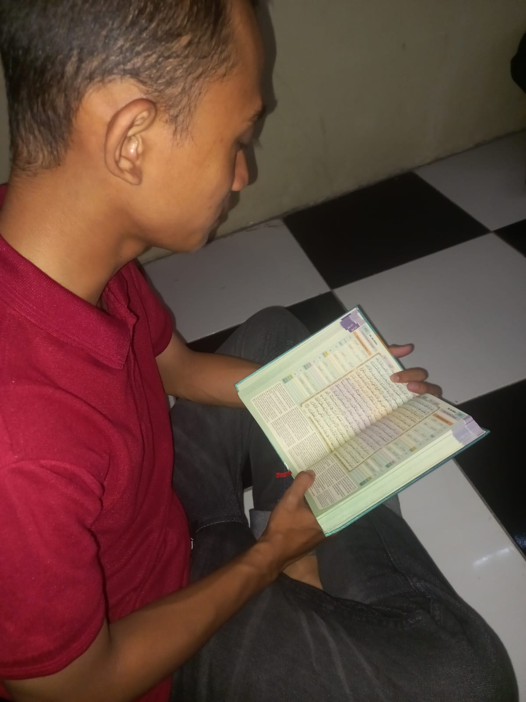

📅 11 Okt 2026 · 16.30 WIB1. Membaca & memahami isi surah Ar-Rum (41)
Pada kegiatan ini kami mengkaji QS. Ar-Rum ayat 41 "Telah nampak kerusakan karena konsep di darat dan di laut disebabkan perbuatan tangan manusia" Sebagai dasar konsep Hifz Al-Bi'ah dan peran manusia sebagai khalifah fil Ardh dalam menjaga kelestarian Jogoyudan